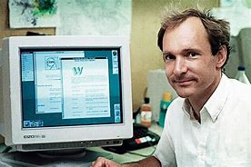

Tim Berners-Lee

Sir Timothy "Tim" John Berners-Lee (Londres, Reino Unido, 8 de junio de 1955) es un científico de la computación británico, conocido
por ser el padre de la Web. Estableció la primera comunicación entre un cliente y un servidor usando el protocolo HTTP en
noviembre de 1989. En octubre de 1994 fundó el Consorcio de la World Wide Web (W3C) con sede en el MIT,
para supervisar y estandarizar el desarrollo de las tecnologías sobre las que se fundamenta la Web y que permiten el funcionamiento de Internet.
Biografía
Nació en el sudoeste de Londres en 1955. Sus padres eran matemáticos y formaron parte del equipo que construyó el Manchester Mark I
(una de las primeras computadoras). Durante el tiempo que estuvo en la universidad, construyó una computadora con una soldadora, circuitos
TTL, un procesador Motorola 68000 y un televisor viejo. Se graduó en física en 1976 en el Queen's College de la Universidad de Oxford.
Conoció a su primera esposa en este periodo. En 1978, trabajó en D.G. Nash Limited (también en Poole) escribió un sistema operativo.
Desarrollo de su carrera
Berners-Lee trabajó en el CERN desde junio hasta diciembre de 1980. Durante ese tiempo, propuso un proyecto basado en el
hipertexto para facilitar la forma de compartir y la puesta al día de la información entre investigadores. En este periodo también construyó
un programa llamado Enquire que no llegó a ver la luz.
Después de dejar el CERN, en 1980, se fue a trabajar a la empresa de John Poole Image Computer Systems Ltd., pero
regresó al CERN otra vez en 1984.
En 1989, el CERN era el nodo de Internet más grande de Europa y Berners-Lee vio la oportunidad de unir Internet y el
hipertexto (HTTP y HTML), de lo que surgiría la World Wide Web. Desarrolló su primera propuesta de la
Web en marzo de 1989, pero no tuvo mucho eco, por lo que en 1990 y con la ayuda de Robert Cailliau, hicieron una revisión que fue aceptada
por su gerente, Mike Sendall. Usó ideas similares a las que había usado en el sistema Enquire para crear la World Wide Web, para esto
diseñó y construyó el primer navegador (llamado WorldWideWeb y desarrollado con NextStep) y el primer servidor web al que llamó httpd
(HyperText Transfer Protocol daemon).
Fuente: Wikipedia
Volver